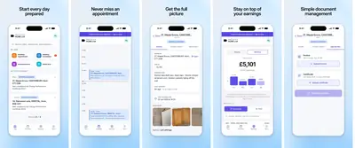
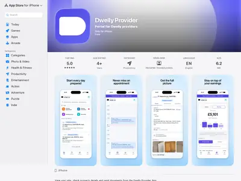
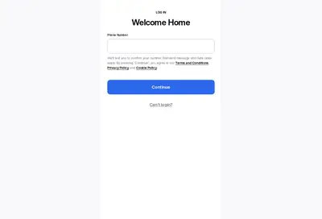
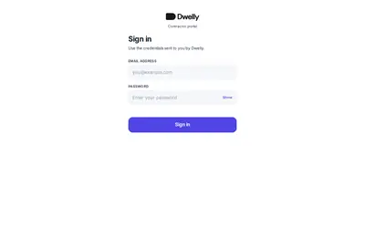
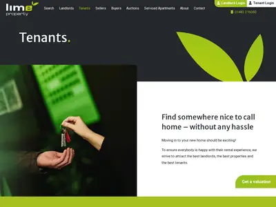
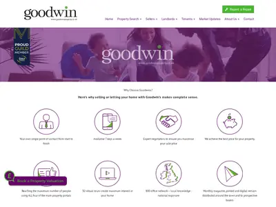
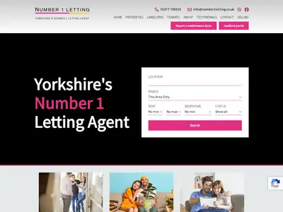
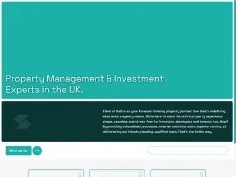

Четыре входа: кто и что видит
Продукт Dwelly собран вокруг ролей. Компания разделяет пользователей на арендатора, собственника, подрядчика и владельца агентства, которое продаётся; у каждого свой адрес и свой способ входа. Кабинеты арендатора и собственника открываются по коду из SMS, подрядчик получает логин от агентства14.
| Вход | Что делает | Кто может войти | Как посмотреть законно |
|---|---|---|---|
| tenant.dwelly.group | Кабинет арендатора: платежи, Direct Debit, заявки на ремонт, общие запросы, документы, уведомление о выезде. Вход по коду из SMS | Арендатор агентства Dwelly | Страница входа открыта; код раздела ремонтов публичен и разобран ниже |
| landlord.dwelly.group | Кабинет собственника: объекты, выписки, файлы, ремонты, согласование смет. Вход по SMS15 | Собственник, отдавший объект в управление | Только как реальный собственник |
| provider.dwelly.group и iOS-приложение Dwelly Provider | Кабинет подрядчика: заявки по статусам, календарь, доход, загрузка счетов и сертификатов, подпись условий | Подрядчик из утверждённого списка: «Login details are provided directly by the agency or Dwelly team» — данные для входа выдаёт агентство или команда Dwelly | Экраны в App Store; ссылка «Become a Service Provider» в подвале сайта — для реальных подрядчиков |
| viewing.dwelly.group/:id | Виртуальный просмотр, предложение арендатора об аренде, задаток за бронь16 | Кандидат, оставивший заявку на объект; ссылка приходит на конкретную заявку | Реальная заявка на объект Lime, Eden Harper и других брендов |
| dwelly.group/form | Заявка на оценку агентства | Владелец агентства | Разговор с командой покупок Dwelly |
Полный вход в продукт возможен только в трёх ролях: арендатор, собственник или подрядчик реального агентства Dwelly. Прямой путь увидеть продукт целиком — разговор с основателями; среди инвесторов Dwelly — Begin Capital и Антон Буздалин.













Путь арендатора, собственника и подрядчика
Путь клиента показывает, в каких точках Dwelly держит человека, а где шаг закрывает система. Шаги восстановлены по публичному коду порталов, договору подрядчика, страницам сайтов и вакансиям. В колонке «Человек» отмечены шаги, где по источникам обязательно участие сотрудника.
Арендатор
| Шаг | Что происходит | Человек |
|---|---|---|
| Обращение по объявлению | Заявка с Rightmove, Zoopla или сайта бренда. «All inquiries are managed automatically through digital self-service chat» — все обращения обрабатывает чат самообслуживания1. По сети — 2 000+ обращений в день17 | — |
| Виртуальный просмотр | Ссылка на viewing.dwelly.group с комнатами в формате историй. Физические просмотры по запросу делает полевой сотрудник — Property Specialist (специалист по объектам) | да |
| Предложение арендатора | Кандидат подаёт предложение об аренде: ставка, дата въезда, срок. Чат проверяет предложение, считает задаток за бронь (в Великобритании не больше недельной аренды), первый платёж аренды и остаток к оплате до въезда, затем принимает оплату. Вход по коду из SMS. Предложение уходит собственнику | — |
| Проверки | KYC (проверка личности), Right to Rent (британская проверка права жить в стране и снимать жильё), referencing (проверка дохода, работодателя и прошлых аренд) — «fully automated» — полностью автоматически. Поставщик проверок в коде и на сайтах не найден | — |
| Выбор арендатора и договор | Решение по кандидату и переговоры ведёт сотрудник8 | да |
| Оплата аренды | Direct Debit через GoCardless. Перенос даты платежа платный: £50 с НДС за изменение договора | — |
| Ремонт | Тип запроса → описание и фото → ИИ-разбор → уточняющие вопросы → советы → заявка. Подробно в подразделе о ремонтах | — |
| Выезд | Раздел выезда в кабинете: арендатор может расторгнуть договор, письменно уведомив за 2 месяца (закон Renters' Rights Act 2025) | — |
Собственник
| Шаг | Что происходит | Человек |
|---|---|---|
| Оценка ставки аренды | Форма «Value my property» — оцените мой объект на сайте бренда. Заявки всех брендов идут в общий сервис landingapi.dwelly.group с меткой бренда | — |
| Договор управления | Terms of Business — договор управления с собственником; воронка «lead → valuation → ToB signed» (заявка → оценка → подписанный договор) описана в вакансии Commercial Growth Manager6 | да |
| Сдача объекта | Реклама объекта на порталах, показы, приём предложений арендаторов. Поля кабинета: Marketing Fee — плата за поиск арендатора; Monthly Fees — ежемесячная плата за управление; Security Deposit — залог арендатора; Let Agreed — объект сдан, ждёт въезда | — |
| Ремонты | Сметы подрядчиков приходят на согласование: «This quote is waiting for landlord approval» — смета ждёт одобрения собственника | да |
| Деньги | Выписки по объекту в кабинете | — |
| Советы и решения | «The relationship layer stays with people» — отношения остаются за людьми: осмотр объекта, инвестиционные вопросы, спорные решения3 | да |
Подрядчик
| Шаг | Что происходит | Человек |
|---|---|---|
| Подключение | Подпись условий работы подрядчика (Terms of Business для подрядчиков) в портале вводом имени. Обязательные документы до первого заказа, включая Gas Safe (допуск к газовому оборудованию) и сертификаты по электрике | — |
| Заявка | Корзины: Quotes to send (отправить смету) → Agency Checks (проверка агентством) → Awaiting Appointment (ждёт визита) → Awaiting Completion (ждёт завершения) → Awaiting Invoice (ждёт счёта) | — |
| Смета | Подтверждение или смета — за 2 рабочих дня, дата визита с арендатором — за 4, работа — за 10 или по смете. Смету проверяет агентство | да |
| Визит | Дату подрядчик ставит только после согласования с арендатором; связь через WhatsApp, SMS или звонок из приложения; арендатор получает напоминания | — |
| Счёт и оплата | Счёт и сертификаты загружаются в приложении. Оплата в течение 20 рабочих дней после получения счёта и только в пределах денег, уже поступивших от собственника. Гарантия на работы 12 месяцев | — |
Владелец агентства
Путь продавца почти целиком ручной: прогрев через сообщество владельцев и трёх менеджеров по развитию бизнеса (BDM), оценка по шести факторам, проверка и сделка за срок до 10 недель, затем 2–3 месяца интеграции с Launch Manager на месте. Подробно этот путь разобран в разделе о покупках агентств.
Функции по доменам
Карта функций показывает набор, который Dwelly считает обязательным для управляющей компании. Продукт делится на домены, по которым организованы команды разработки: Tenant Find (поиск арендатора), Property Management (полное управление: связь с арендатором, ремонты), Payments (деньги) и CRM (база клиентов и переписки)6. Вокруг них — комплаенс, связь, кабинет собственника и приём заявок на продажу агентств. Цифры в колонке «Результат» — заявления компании.
Tenant Find: поиск арендатора
| Функция | Проблема | Данные | Что делает | Что выдаёт | Человек | Автоматически | Результат |
|---|---|---|---|---|---|---|---|
| Приём обращений | Сотни обращений с порталов, звонки и письма на каждое объявление | Обращения с Rightmove, Zoopla, сайтов брендов; ответы кандидата в чате | Отвечает в чате самообслуживания, собирает анкету кандидата | Профиль кандидата, приглашение на просмотр | Нет в штатном сценарии | Ответ, сбор данных, квалификация | 2 000+ обращений в день по сети17 |
| Виртуальный просмотр | Физические просмотры съедают время сотрудника на каждом объекте | Фото, видео 360°, истории по комнатам; снимает Property Specialist камерой Giraffe 360 | Показывает объект по ссылке десяткам кандидатов | Страница просмотра с кнопкой «Make an Offer» — подать предложение | Съёмка и опись; физический просмотр по запросу | Показ, переход к подаче предложения | «Viewings are done virtually for tens of people per property» — десятки виртуальных просмотров на объект |
| Предложение арендатора и задаток за бронь | Кандидаты теряются между просмотром и бронью | Анкета, предложенная ставка, дата въезда и срок, параметры объекта | Принимает предложение, считает задаток за бронь, первый платёж аренды и остаток, принимает оплату | Предложение собственнику, расчёт платежей | Решение собственника и агента | Расчёт и сбор данных | «8x verified offers per property» — «8x» проверенных предложений на объект (Platform)1; «10 validated offers … within three days» — 10 проверенных предложений за три дня (Fortune)7 |
| Проверки кандидата | Проверка личности, права на аренду, дохода и прошлых аренд вручную занимает дни | Документы кандидата, данные работодателя и прежнего арендодателя | KYC, Right to Rent, referencing (проверка дохода и прошлых аренд), подготовка договора | Результат проверки, договор | Не указан | «fully automated with banking level KYC» — полностью автоматически, проверка личности банковского уровня | Сдача меньше чем за две недели против ~3 недель по рынку7,20; «reduced time to rent by 75%»1 |
Property Management: управление и ремонты
| Функция | Проблема | Данные | Что делает | Что выдаёт | Человек | Автоматически | Результат |
|---|---|---|---|---|---|---|---|
| Приём заявки на ремонт | Заявки приходят звонками, письмами и в WhatsApp без деталей | Текст арендатора, фото, ответы на вопросы, марка котла или техники | Классифицирует, оценивает срочность, задаёт вопросы, проверяет ответственность по договору, предлагает меры | Карточка проблемы: категория, срочность, допущения, шаги, заявка с номером | Только сомнительные случаи | Разбор, аварийные инструкции, отнесение расходов на арендатора по типовым пунктам | Часть заявок закрывается советом или отказом без выезда подрядчика |
| Ведение заявки агентами | Около 30 действий человека на одну заявку | Карточка объекта, инструкции собственника, история подрядчиков | Выбирает подрядчика, запрашивает запчасти, договаривается о доступе, напоминает, информирует стороны | Движение заявки по статусам | В среднем 5 эскалаций по 3 минуты | Координация и напоминания | 15–20 минут человека на заявку против ~3 часов; 1 000+ заявок за август 20262 |
| Портал подрядчика | Подрядчики теряют заказы и счета, агентство вручную собирает сертификаты | Заказ-наряд, контакты арендатора, фото, документы | Ведёт заказ по корзинам, календарь, доход, загрузку счетов и сертификатов, подпись условий | Смета, дата визита, счёт, сертификат | Проверка сметы и результата агентством, согласие собственника | Напоминания арендатору, статусы, учёт оплат | Срок ремонта ~20 дней против 50 по рынку, цель — 107 |
Payments: деньги
| Функция | Проблема | Данные | Что делает | Что выдаёт | Человек | Автоматически | Результат |
|---|---|---|---|---|---|---|---|
| Сбор аренды | Ручной контроль поступлений и просрочек | Мандат Direct Debit арендатора | Списывает аренду через GoCardless, позволяет перенести дату платежа | Платёж, квитанция в кабинете | Изменение договора при переносе даты (£50) | Списание | «Arrears are managed automatically, and radically reduced» — долги ведутся автоматически и резко сокращены1 |
| Сверка платежей | Финансовый администратор вручную сопоставляет каждое поступление с объектом и начислением | Банковские поступления, начисления по договорам | Распознаёт платёж и разносит его | Сверенные счета, список исключений | Исключения, спорные и рискованные платежи | 80%+ платежей; с будущим партнёром (не назван) — цель 98% | 2–3 часа в день экономии у команды финансов2 |
| Просрочки | Долги арендаторов | Статусы платежей | По сайту — автоматически; по вакансии Operations Manager (Payments) просрочки ведут команды финансовых администраторов на 20–30+ человек | Работа с должником | Да, по вакансиям | Напоминания (гипотеза) | Цифр нет |
Комплаенс, связь, собственник, продажа агентств
| Функция | Проблема | Данные | Что делает | Что выдаёт | Человек | Автоматически | Результат |
|---|---|---|---|---|---|---|---|
| Комплаенс | Штрафы за просроченные сертификаты газа, электрики, энергоэффективности | Сертификаты, даты, загрузки подрядчиков | Следит за сроками, создаёт заказы на проверки | Заказ-наряд на сертификат («New compliance job: Energy Performance Certificate») | Compliance Manager (менеджер по соответствию требованиям), он же ответственный за противодействие отмыванию денег (MLRO) и за защиту персональных данных (DPO) | Отслеживание сроков и заказы | «Compliance is automated 100%»; «Responsibility is on Dwelly» — ответственность на Dwelly1 |
| Коммуникации и CRM | История объекта разбросана по почте, телефонам и мессенджерам | Звонки, SMS, почта, WhatsApp, история купленных агентств за годы работы | Сводит всё в карточку клиента и объекта, распознаёт и синтезирует речь в звонках | Контекст для агентов и людей | Сотрудники как «advisors to landlords and tenants» — советники собственников и арендаторов | Приём и маршрутизация | 300+ объектов на одного управляющего объектами (property manager) против ~100 по рынку, по словам Dwelly; по всей компании — около 33 объектов на сотрудника (расчёт по данным Fortune, 02.2026) |
| Кабинет собственника | Собственник не видит, что происходит с объектом | Объекты, выписки, файлы, ремонты | Показывает статус сдачи, начисления, заявки | Выписки, статусы ремонтов | Согласование смет | Отображение | Цифр нет |
| Заявки на продажу агентства | Поток владельцев, готовых продать | Форма оценки: число объектов в полном управлении, контакты | Собирает заявки в общий сервис, передаёт главе M&A | Заявка продавца | Оценка, переговоры, проверка | Приём заявки | 18 агентств за 2 года по реестру Companies House (09.2026); в прессе — от 16 до 20 в зависимости от даты и источника |
Практики купленных агентств, ставшие функциями
Dwelly переносит удачные приёмы купленных агентств в общий продукт. Дан Лифшиц 10.09.2026 привёл два примера: фото и описание поломки, по которым подрядчик даёт предварительную смету без выезда, — эту практику одного агентства раскатали на все бренды; подход одного агентства к гарантии аренды распространили на группу11. 30.09.2026 он написал, что в систему загружены годы, а иногда десятки лет писем, звонков и сообщений каждого агентства; пример того, что система держит в памяти, — порог согласия собственника на ремонт до £25011.


Как заявка на ремонт проходит путь от сообщения до подрядчика
Ремонты — самый разобранный по открытым данным участок продукта Dwelly. Порядок восстановлен по публичному коду кабинета арендатора (файл правил приёма заявок, 56 КБ). Первые проверки идут в браузере арендатора до обращения к модели, поэтому авария или типовой случай не зависят от ошибок ИИ.
Восемь шагов приёма заявки
- Текст и фото арендатора. Арендатор выбирает тип запроса: ремонт или общий вопрос.
- Проверка на аварию. Шесть шаблонов без модели: угарный газ, пожар от электрики, открытый огонь, утечка газа, обрушение, прорыв воды. При совпадении арендатор сразу видит инструкцию и телефоны, заявка уходит с пометкой «[EMERGENCY: …]».
- Быстрый путь «ответственность арендатора». Ключевые слова из библиотеки пунктов договора дают готовый ответ, если в тексте нет ни одного из 34 стоп-слов.
- Вопрос о марке котла или техники. Задаётся до вызова модели, с подсказкой, где искать табличку; не задаётся, если арендатор пишет, что техники в квартире нет.
- Разбор моделью. Ответ приходит потоком по частям: интерфейс на лету показывает число найденных проблем и максимальную срочность.
- Уточняющие вопросы. К вопросам модели всегда добавляются два обязательных: о питомцах и о доступе (коды, сигнализация).
- Уточнённые советы. Второй вызов модели получает ответы и возвращает советы; ожидание ограничено 30 секундами.
- Итог. Совет «попробуйте сами», меры по ограничению ущерба до приезда мастера или заявка в систему.
Дальше заявку ведут ИИ-агенты бэк-офиса: читают карточку объекта и инструкции собственника, выбирают подрядчика, заказывают запчасти, договариваются о доступе, информируют стороны. Подрядчик получает заказ в портале и работает в сроках 2 / 4 / 10 рабочих дней; смету проверяет агентство, затем одобряет собственник, после работ агентство принимает результат, и только потом идёт оплата.
Где работает модель
| Роль | Где | Что известно | Источник |
|---|---|---|---|
| Разбор заявки на ремонт | кабинет арендатора | По каждой проблеме: категория и подкатегория, срочность (авария / срочно / планово) и её причина, уверенность, допущения, можно ли решить самому и как, меры по ограничению ущерба, ответственность арендатора и причина, уточняющие вопросы, нужны ли фото, краткое резюме. Одно описание может дать несколько проблем | код tenant.dwelly.group13 |
| Уточнение по ответам | кабинет арендатора | Второй вызов с парами «вопрос — ответ»; тайм-аут 30 секунд | код13 |
| Агенты ведения заявки | бэк-офис | Выбирают подрядчика, заказывают запчасти, договариваются о доступе, информируют стороны; при неуверенности спрашивают человека | блог 28.07 и 03.09.20262,3 |
| Ответы на вопросы | каналы связи | Вопросы по ремонту, договору, процедурам и рутине | блог 28.07.20263 |
| Распознавание платежей | финансы | 80%+ без участия администратора | блог 03.09.20262 |
| Голос | телефония | Распознавание и синтез речи в звонках (2024); отдельный приз за голосовых агентов на хакатоне с ElevenLabs | PropertyWire, блог 11.09.202610,4 |
| Разработка | инженерия | Applied AI Engineer: «memory, context management, tool-calling, orchestration, and feedback loops» — память, управление контекстом, вызов инструментов, оркестрация, обратная связь | вакансия6 |
Поставщик модели публично не назван. Партнёры хакатона 10.10.2026 — Anthropic и ElevenLabs, среди призов — кредиты Claude4.
Эскалация к человеку
Dwelly определяет эскалацию так: «An escalation occurs when the AI reaches a point where it cannot choose the next action with sufficient confidence» — эскалация наступает, когда ИИ не может выбрать следующее действие с достаточной уверенностью2. Средние значения за август 2026 года: 5 эскалаций на заявку, 3 минуты на эскалацию, итого 15–20 минут человека. Базой сравнения названы 30 ручных действий по 6–7 минут, около 3 часов. По каждой эскалации фиксируются недостающая информация, блокирующий инструмент или правило, характер решения, время человека и исход.
«We evaluate our agents through complete operating workflows. Human minutes per task and escalation frequency show how much work the system can handle on its own.» — Агентов оценивают по целым рабочим процессам. Минуты человека на задачу и частота эскалаций показывают, сколько работы система тянет сама.
блог Dwelly, 03.09.2026
Сбой 17.09.2026
Ошибка развёртывания создала 200 лишних заявок: система повторно запустила продление газовых сертификатов. Заявки отменили, извинения отправили; об инциденте публично написал Дан Лифшиц11. Случай показывает, что автоматическое создание заказов без человека масштабирует и ошибки: одна неверная настройка сразу задевает сотни объектов.
Что система делает сама, а что с человеком
Матрица автономности показывает, где Dwelly проводит границу между ИИ и сотрудником. Двадцать четыре действия разложены по уровням: показывает, рекомендует, делает после подтверждения, делает сам; одно действие целиком остаётся за человеком. Основание — код порталов, договор подрядчика, блог и вакансии.
| Действие | Уровень | Почему здесь | Источник |
|---|---|---|---|
| Ответ на обращение по объявлению, сбор анкеты | сам | чат самообслуживания | Platform |
| Показ объекта по ссылке | сам | виртуальный просмотр | viewing |
| Приём предложения арендатора, расчёт задатка за бронь и остатка | сам | шаги чата подачи предложения | код viewing |
| Проверки KYC, Right to Rent, referencing | сам | «fully automated» | Platform |
| Выбор арендатора, переговоры по договору | после подтверждения | решение людей | Tech Times |
| Списание аренды по Direct Debit | сам | GoCardless | кабинет арендатора |
| Распознавание и разнесение платежа | сам | 80%+ без человека, остальное — исключения | блог 03.09.2026 |
| Работа с просрочками | после подтверждения | сайт пишет «automatically», вакансии описывают команды людей | Platform, вакансии |
| Разбор заявки на ремонт: категория, срочность | сам | LLM, потоковый ответ | код кабинета |
| Аварийная инструкция: газ, угарный газ, пожар, обрушение, потоп | сам | регулярные выражения до вызова модели | код кабинета |
| Уточняющие вопросы арендатору | сам | модель плюс обязательные вопросы о питомцах и доступе | код кабинета |
| Советы «попробуйте сами» и меры по ограничению ущерба | рекомендует | арендатор решает, делать ли | код кабинета |
| Отнесение расходов на арендатора по пункту договора | сам | типовые случаи — жёсткие правила; спорные — человек | код кабинета, Platform |
| Отсев вопросов не по теме и запросов статуса | сам | ответ сервера off_topic / status_enquiry | код кабинета |
| Создание заявки в системе | сам | «A record of this report has been created» | код кабинета |
| Выбор подрядчика, запрос запчастей, доступ | сам | эскалация при неуверенности | блог 28.07 и 03.09.2026 |
| Проверка сметы подрядчика | после подтверждения | «Agency checks quote/proof of work» | код портала |
| Согласование сметы собственником | после подтверждения | «waiting for landlord approval» | код портала |
| Назначение визита и напоминания арендатору | сам | дату ставит подрядчик, напоминания — система | код портала |
| Приёмка работ | после подтверждения | «Agency checks work results» | код кабинета |
| Оплата подрядчику | после подтверждения | после поступления денег от собственника | договор подрядчика, п. 4.3 |
| Отслеживание сроков сертификатов | сам | «automated 100%» | Platform |
| Выписки собственнику | показывает | отображение в кабинете | код кабинета собственника |
| Инвестиционные советы собственнику, осмотры объекта | только человек | «relationship layer stays with people»; система в действии не участвует | блог 28.07.2026 |
Пятнадцать действий из двадцати четырёх выполняются без подтверждения, шесть — после подтверждения человеком, одно — рекомендация, одно — только отображение, одно выполняет только человек (расчёт). Граница проходит по деньгам собственника и третьих лиц: смета, приёмка и оплата подрядчику остаются за людьми по замыслу, выбор арендатора — тоже. Просрочки остаются за людьми по факту, хотя сайт пишет обратное. Советы по самостоятельному ремонту остаются рекомендацией из-за ответственности: «These are suggested steps, not professional advice» — это предлагаемые шаги, профессиональной консультацией они не являются.
Правила и тексты: аварии, договор, стоп-слова
Жёсткие правила — дешёвая и проверяемая часть продукта, которая работает без ИИ. Ниже — дословные списки из публичного кода кабинета арендатора. Системная инструкция модели хранится на сервере и в открытом коде не видна; на стороне браузера лежат три вставки к ней, аварийные сценарии и библиотека пунктов договора13.
Аварийные сценарии · 6
Срабатывают по регулярным выражениям до вызова модели. Телефоны: 999 — экстренные службы, 0800 111 999 — газовая аварийная служба, 105 — сетевая компания при отключении электричества, 0800 316 9800 — аварийная служба водоснабжения.
| Сценарий | Что ловит шаблон | Главная строка | Действия | Телефоны |
|---|---|---|---|---|
| Carbon Monoxide Alert — угарный газ | carbon monoxide, CO alarm, CO detector, CO alert | Carbon monoxide is invisible and odourless — evacuate immediately. — угарный газ невидим и без запаха, немедленно покиньте жильё | Выйти всем, дверь оставить открытой, звонить 999 снаружи, не возвращаться до разрешения пожарных | 999; 0800 111 999 |
| Electrical Fire — пожар от электрики | электрика, проводка, щиток, розетка рядом (до 50 знаков) со словами fire, burning, smoke, sparking, melting, smell | Do not touch any electrical fitting. Turn off the mains if safe to do so. — не трогать электрику, выключить автомат, если безопасно | Не трогать проводку, выключить щиток только если до него безопасно добраться, уйти при дыме или огне, звонить 999 | 999; 105 |
| Fire — пожар | on fire, ablaze, house fire, there's a fire, smoke filling, трижды повторённое fire | Get out now. Do not stop to collect belongings. — выходите сейчас, не собирайте вещи | Покинуть здание, закрыть за собой двери, не пользоваться лифтом, звонить 999 снаружи, не возвращаться | 999 |
| Gas Leak — утечка газа | smell рядом с gas; gas рядом с leak, escaping, hissing, fumes; gas leak | Do not turn any switches on or off — a spark could ignite the gas. — не трогать выключатели, искра может поджечь газ | Без выключателей и огня, открыть окна и двери, перекрыть газ у счётчика, выйти и звонить в газовую службу; 999 при большой утечке или плохом самочувствии | 0800 111 999; 999 |
| Structural Collapse — обрушение | ceiling, floor, roof, wall, balcony, staircase рядом с collapsed, caved in, coming down; structural damage | Do not enter the affected area — further collapse is possible. — не входить в зону, возможно дальнейшее обрушение | Отойти, проверить всех людей, 999 при пострадавших, покинуть жильё при сомнениях, не разбирать завалы | 999 |
| Major Flooding — прорыв воды | burst pipe / main / tank; uncontrolled water; water everywhere, pouring, gushing, through the ceiling, ankle-deep, rising fast | Turn off the water at the stopcock and avoid contact with standing water near electrics. — перекрыть воду, не касаться воды у электрики | Перекрыть главный кран, выключить электричество при воде у розеток, поднять ценности, 999 при угрозе жизни | 999; 0800 316 9800 |
Библиотека пунктов договора · 9
Каждое правило ссылается на пункт типового договора аренды и даёт арендатору ответ со ссылкой на пункт. Быстрый путь в браузере работает только у правил, где есть и ключевые слова, и готовый ответ.
| Пункт | Правило | Ключевые слова | Быстрый путь |
|---|---|---|---|
| Policy | Tenant lockout — потеря или забытый ключ. Сломанный замок или домофон остаются за собственником | locked out, locked myself out, lock myself out, lost my key, lost the key, lost my keys, forgot my key, forgotten my key, left my key inside, can't get in because, cant get in because (11) | частично: 3 фразы из 11 блокирует стоп-слово «lock» |
| 12.18 | Light bulbs, fluorescent tubes and batteries — лампочки и батарейки меняет арендатор | light bulb, lightbulb, light globe, bulb blown, blown bulb, bulb has blown, bulb blew, replace the bulb, change the bulb, need a new bulb, new light bulb, fluorescent tube (12) | да |
| 12.8 / 12.9 | Alarm batteries — батарейки датчиков дыма, угарного газа и сигнализации, проверка раз в месяц | smoke alarm battery, smoke detector battery, co alarm battery, carbon monoxide alarm battery, alarm battery, alarm batteries, replace the battery in, change the battery in, smoke alarm beeping, smoke alarm chirping, smoke detector beeping, smoke detector chirping, alarm is beeping, alarm keeps beeping, alarm is chirping, alarm keeps chirping (16) | да |
| 12.6 | Broken glass caused by tenant — стекло, разбитое арендатором | нет | нет |
| 12.2 | Condensation, damp or mould from poor ventilation — конденсат и плесень от недостаточного проветривания или отопления; при дефекте конструкции — собственник | нет | нет |
| 12.4 | Garden maintenance — стрижка газона, живой изгороди, прополка; ограды, калитки, сараи, освещение остаются за собственником | grass cutting, cut the grass, mow the lawn, mow the grass, lawn mowing, lawn needs mowing, lawn needs cutting, grass needs cutting, grass needs mowing, grass has grown, hedge trimming, trim the hedge, hedges need trimming, hedge needs cutting, needs weeding, garden weeding, pull the weeds, pull weeds, overgrown garden, overgrown lawn, overgrown hedge, garden is overgrown, lawn is overgrown, lawn has become overgrown, grass is overgrown, hedge is overgrown, garden maintenance, patio weeds, weeds in the garden (29) | да |
| 12.5 | Window cleaning — мойка окон изнутри и снаружи; уплотнители, стеклопакеты и рамы — собственник | window cleaning, clean the windows, clean windows, window cleaner (4) | никогда: все 4 фразы содержат стоп-слово «window» |
| 12.11 | Drain blockages caused by tenant misuse — засор по вине арендатора; дефект канализации — собственник | нет | нет |
| 12.17 | Avoidable contractor call-outs — лишние вызовы мастера, включая ночные без настоящей аварии | нет | нет |
Стоп-слова · 34
Если в тексте есть любое из этих слов про конструкцию и инженерные системы, быстрый путь блокируется и вопрос уходит модели.
| Группа | Слова |
|---|---|
| Ограждения и конструкция | fence, fencing, gate, wall, ceiling, roof, gutter, structural, subsidence |
| Отопление и вода | boiler, heating, radiator, pipe, plumbing, leak, leaking, flood, drain, sewage, water pressure |
| Электрика | electrical, socket, wiring, fuse, circuit |
| Окна и двери | window, frame, latch, lock, door, hinge |
| Сырость | damp, mould, mold |
Вставки к инструкции модели · 3
| Вставка | Ключевые слова | Что требует от модели |
|---|---|---|
| Tenant lockout | те же 11 фраз, что в правиле о ключе | Ответственность арендатора, самостоятельного решения нет; ответ покрывает рабочее время (запасной ключ в офисе под залог) и нерабочее (слесарь за свой счёт, сохранить чек) |
| Boiler or central heating issue | 14: boiler, central heating, combi boiler, no heating, no heat, heating not working, boiler not working, boiler broken, boiler fault, boiler pressure, boiler error, boiler flashing, pilot light, boiler keeps cutting out | Если марка котла известна — советы под модель (кнопка сброса, давление, коды ошибок); если нет — первым вопросом спросить марку и модель |
| Appliance issue | 23: oven, hob, cooker, dishwasher, washing machine, washer, tumble dryer, dryer, fridge, freezer, fridge-freezer, refrigerator, extractor fan, extractor hood, microwave, electric shower, shower unit, shower not working, shower broken, immersion heater, water heater, hot water cylinder, immersion | То же для бытовой техники: марка и модель первым вопросом |
Фото и обязательные вопросы
Фото становится обязательным при 31 признаке видимого дефекта: трещина, сломано, повреждение, дыра, сырость, плесень, протечка, капает, конденсат, пятна, вздутие, копоть, ожог, помёт, провисание, обрушение, запотевание и другие. Для запахов, шумов, «не работает», «нет воды / света / отопления» и перемежающихся проблем фото не требуется, и интерфейс объясняет почему. Если модель не задала их сама, добавляются два вопроса: «Are there any pets at the property?» — есть ли в жилье питомцы и «Are there any access considerations we should know about, such as entry codes or alarms…?» — есть ли особенности доступа: коды, сигнализация.
Тексты интерфейса приёма заявки
| Место | Текст (дословно) | Смысл |
|---|---|---|
| Выбор типа | What kind of request would you like to send? · Repairs, plumbing, heating, broken or unsafe things at your home · Questions, parking, neighbours, anything else not a repair | Ремонт или общий вопрос |
| Загрузка | Checking your request… · Analysing your request… · Gathering details… · This usually takes a few seconds | Статусы ожидания разбора |
| Уточнение | Reviewing your answers… · Checking for self-resolve steps… · Preparing tailored guidance… · Almost ready… | Статусы второго вызова |
| Подтверждение | Here's what we picked up from your description. Tap continue to confirm details. · A few quick questions · Your answers help us send the right person. | Показ разбора и вопросы |
| Советы | You might be able to fix this · These are suggested steps, not professional advice. Only try them if you feel comfortable doing so. · These are suggested steps to help limit damage while we arrange a professional. | Совет с оговоркой об ответственности |
| Кнопки | Try fixing this yourself · No, still broken — raise a job · Continue to summary · Submit request | Попробовать самому, создать заявку, отправить |
| Ответственность | This is your responsibility | Расход за арендатором |
| Перенаправление | This looks like a general query · For non-maintenance questions, use the General Request form. Your text will carry over. · This looks like a maintenance issue · Would you like to switch? | Перевод между ремонтом и общим вопросом с сохранением текста |
| Фото | Photos required — they help us diagnose and route this faster · Please add at least one photo before submitting. | Фото обязательно |
| Аварийный журнал | Logging this with our office… · A record of this report has been created · We couldn't auto-log this with our office — please call the office once you're safe. | Авария записана; при сбое — звонок в офис |
| Статусы заявки | We are looking into your request · A second quote has been requested · Quote approved — we are arranging the visit · Awaiting confirmation · We are reviewing the work · We are reviewing the paperwork · This request has been closed | Разбор, вторая смета, смета одобрена, ждём дату, проверка работ и документов, закрыто |
Договор подрядчика: ключевые пункты
| Пункт | Содержание |
|---|---|
| 3.5 | Dwelly может по отдельному договору получать комиссию или реферальное вознаграждение в связи с работами |
| 4.3 | Срок оплаты — 20 рабочих дней после получения счёта, «to the extent cleared funds have been received from the relevant Landlord» — в той мере, в какой деньги от собственника поступили |
| 5.1 | Без заказ-наряда или письменного разрешения Dwelly работы не начинаются и не оплачиваются |
| 13.2 | Подрядчик и Dwelly — независимые контролёры персональных данных |
| 15.1 | Любая сторона может расторгнуть договор с уведомлением за 20 рабочих дней |
| Schedule 1 | Подтверждение или смета — 2 рабочих дня от заказа; дата визита с арендатором — 4; работа — 10; документы — 2 дня после завершения; гарантия 12 месяцев |
| Портал | «Only set the visit date after you've agreed it with the tenant» — ставьте дату только после согласования с арендатором; затем заявка переходит в Awaiting Completion, арендатор получает напоминания |
| Приложение | «Only payments processed through Dwelly are shown» — показаны только платежи через Dwelly; деньги напрямую от агентства или собственника не видны |
Просмотры, деньги и выезд арендатора
| Место | Текст (дословно) | Смысл |
|---|---|---|
| Просмотр: обещание | Our viewings are virtual. We've already checked every detail for you, so you get the full picture right at your fingertips | Просмотры виртуальные, детали проверены заранее |
| Просмотр: скорость | Skip the wait with traditional agencies. With us, you can quickly make an offer, get verified, and sign your tenancy agreement, all online | Предложение арендатора, проверка и договор онлайн |
| Просмотр: гарантия | What you see is what you get · Spot a difference after move in? We'll work together to resolve it | Если после въезда объект отличается — решат вместе |
| Предложение арендатора | …, backed by our pre-listing verification, assistance policy, and 24/7 support. | Предложение подкреплено проверкой объекта до публикации, правилами помощи и поддержкой 24/7 |
| Повторная отправка предложения | We've received your request and will resubmit your offer to the landlord for consideration. | Предложение арендатора повторно отправлено собственнику на рассмотрение |
| Direct Debit | Setting up Direct Debit ensures that your rent is paid automatically on time, every month. · GoCardless securely processes your payments | Автосписание через GoCardless |
| Перенос даты | Please note: you would be charged £50 (incl. VAT) for the admin work to update the Tenancy Agreement. | £50 с НДС за переоформление договора аренды |
| Выезд | Under the Renters Rights Act 2025, you can end your tenancy at any time by giving at least 2 months written notice. | Арендатор может расторгнуть договор в любой момент, письменно уведомив за 2 месяца |
Под капотом: сервисы и стек
Техническая карта показывает, из каких отдельных сервисов состоит продукт такого масштаба и что Dwelly берёт у внешних поставщиков. Поддомены найдены по открытому журналу сертификатов12, стек — по вакансиям6. Внутренние сервисы не опрашивались.
| Адрес | Назначение | Технология |
|---|---|---|
| www.dwelly.group | сайт группы | Nuxt, контент в Storyblok, Google Tag Manager, Usercentrics |
| tenant.dwelly.group → tenant-api | кабинет арендатора | Nuxt / Vue, Sentry с записью сессий, GA4 с идентификатором пользователя |
| landlord.dwelly.group → landlord-api | кабинет собственника | Nuxt / Vue, Sentry |
| provider.dwelly.group, test-provider | портал и iOS-приложение подрядчика | React, tRPC, Capacitor для iOS; устанавливается как веб-приложение |
| viewing.dwelly.group → viewing-api | виртуальный просмотр, предложение арендатора, задаток за бронь | Vue, Microsoft Clarity, GA4, Sentry |
| landingapi.dwelly.group | приём заявок: оценка агентства и оценка аренды для всех брендов | один сервис, бренд передаётся параметром |
| chat.dwelly.group | чат (сертификат с 2023) | — |
| api.front, notifications.api | общие API и уведомления | — |
| image-s3, cdn, publications | медиа и публикации | — |
| cb-webhooks-sbx (июль 2026) | песочница вебхуков | — |
| vpn-gcp.ext | доступ к облаку | Google Cloud |
| api / dev / stage.dwelly.app | ранние домены | — |
| Область | Что используется |
|---|---|
| Разработка | TypeScript (основной), Node.js, React, tRPC, Drizzle ORM, PostgreSQL и MySQL; «LLM Orchestration · Agentic Workflows» |
| Команды | Домены Tenant Find, Property Management, Payments; CRM собственная |
| Связь | IP-телефония, SMS/RCS, почта, WhatsApp Business API; поставщики Voximplant, Vonage, Twilio. Перенос номеров купленных агентств |
| Платежи | GoCardless (Direct Debit); «upcoming partnership» — будущее партнёрство (партнёр не назван) для распознавания 98% платежей |
| Офис | HubSpot (сообщество владельцев), Mailchimp по брендам, Zapier, Notion (плейбуки интеграции), Wordsmith (юридический ИИ), камеры Giraffe 360 |
| Качество | Applied AI Engineer: проверки качества и наблюдение за агентами; Operations Associate: «vibe-coding fixes yourself» — самостоятельные мелкие правки кода с помощью ИИ в портале подрядчика |
Потоковый ответ модели простыми словами
Кабинет арендатора отправляет описание проблемы на сервер и получает ответ частями, по мере того как модель его пишет. Из первых частей интерфейс сразу достаёт категорию и срочность, поэтому арендатор видит счётчик найденных проблем и максимальную срочность до окончания разбора. Уточняющие вопросы приходят отдельным событием раньше полного ответа. Сервер может вернуть два кода отказа: вопрос не по теме (перевод в общий запрос) и вопрос о статусе (перевод к списку открытых заявок).
Перевод купленных брендов на платформу
| Бренд | Вход арендатора и собственника | Ремонты | Прочее |
|---|---|---|---|
| Lime Property | порталы Dwelly | портал Dwelly | объявления из Alto / Vebra |
| Eden Harper | порталы Dwelly | портал Dwelly | сайт пересобран на Nuxt; форма оценки идёт в общий сервис Dwelly |
| Number 1 Letting | порталы Dwelly | портал Dwelly | PropertyHive |
| HC Lettings | порталы Dwelly | портал Dwelly | WordPress / Elementor |
| Goodwin | — | goodwin.fixflo.com | звонки — Moneypenny; engage.epropservices.com |
| AP Morgan | — | ap-morgan.fixflo.com | чат msgboxx, Hotjar |
| Settio | — | settio.fixflo.com | visitor.chat, HubSpot |
Состояние на 23.09.2026 по главным страницам сайтов. Четыре бренда уже работают через порталы Dwelly, три, купленных в 2026 году, ведут ремонты в стороннем сервисе Fixflo. Сайты Brookdale, Albery Tyson, Gallant Richardson и Parks не проверены. Купленные агентства переходят на платформу постепенно, и в переходный период старые инструменты продолжают работать.







Что из продукта зависит от британского рынка
Продукт Dwelly построен под долгосрочную аренду: арендатор живёт годами, платит раз в месяц и сам отвечает за мелкий ремонт. В посуточной аренде гости меняются каждые несколько дней, брони приходят с Airbnb, Booking и сайта через PMS, уборка и бельё — ежедневная операция. Поэтому за пределы Великобритании переносится логика процессов, а часть функций теряет смысл. Таблица разбирает блоки продукта по этому признаку.
| Блок Dwelly | Аналог в посуточной аренде | Что переносится | Что не переносится |
|---|---|---|---|
| Аварийный слой до модели | Ночные и срочные обращения гостей | Шаблоны аварий с инструкциями и телефонами, которые срабатывают без ИИ; запись аварии в журнал | Британские номера (999, 105); нужны 112, местные аварийные службы, тексты на испанском, английском, французском |
| Библиотека пунктов договора | Споры «кто платит»: гость, собственник, управляющая компания | Таблица типовых случаев со ссылкой на пункт договора управления и готовым ответом | Пункты 12.x британского договора аренды; у гостя ответственность решается депозитом или заявкой в Airbnb / Booking |
| Вопросы до модели | Кондиционер, бойлер, Wi-Fi, кодовый замок | Обязательные вопросы о марке техники, доступе и фото дефекта | Вопрос о питомцах теряет смысл, если правила дома их задают заранее |
| Портал подрядчика | Уборка, бельё, сантехник, электрик, бассейны | Корзины статусов, сроки 2 / 4 / 10 дней, фото до и после, оплата после проверки, комиссия с подрядчика по отдельному договору | Сроки в днях; уборка между выездом и заездом идёт в окне нескольких часов |
| Фото поломки для сметы без выезда | Мелкий ремонт между бронями | Предварительная смета по фото, порог согласия собственника (у Dwelly — £250) | — |
| Автосверка платежей | Выплаты Airbnb, Booking, Vrbo и прямые брони | Автоматическая разноска, люди работают с исключениями | Direct Debit и банковская сверка аренды; в посуточной аренде деньги приходят выплатами площадок |
| Минуты человека на задачу и журнал эскалаций | Нагрузка команды поддержки | Учёт числа задач по типам, минут на каждую и причин передачи человеку | Базу сравнения «30 действий по 6–7 минут» придётся мерить у себя |
| Кабинет собственника | Отчёт собственнику | Выписки, статусы ремонтов, согласование расходов выше порога | Поля долгосрочной сдачи: Let Agreed (объект сдан, ждёт въезда), Security Deposit (залог арендатора) |
| Поиск арендатора (Tenant Find): виртуальные просмотры, предложения арендаторов, проверки KYC и Right to Rent | Нет прямого аналога | — | Гость бронирует через площадку, проверку личности и оплату делает площадка |
| Комплаенс сертификатов | Лицензия HUT и плановые проверки оборудования | Отслеживание сроков и автоматические заказы на проверки | Британский перечень сертификатов |
Отзывы купленных агентств показывают обратную сторону автоматизации: на Trustpilot у Lime жалуются на ИИ-чат, «that never replies… will not put you on with a human» — который не отвечает и не соединяет с человеком19. В посуточной аренде, где гость ждёт ответа в течение минут, такой сбой стоит отзыва на площадке и позиции в выдаче. Подробнее отзывы разобраны в разделе об удержании, модели софта и платформ — в разделе о платформах.
Открытые вопросы
| Что неизвестно | Как узнать |
|---|---|
| Какая модель стоит за разбором заявок и сколько стоит один разбор | Разговор с основателями Dwelly через инвесторов; вопрос на хакатоне 10.10.2026 |
| Доля заявок, прошедших путь без единой эскалации | Запрос к Dwelly; в публикациях есть только средние 5 эскалаций |
| Применяется ли жёсткое переопределение ответа для потери ключа на сервере | Тестовая заявка реального арендатора или вопрос команде продукта |
| Какой из трёх показателей срока ремонта (−33%, −50%, −60%) верен и на какой базе | Запрос замеров до и после по одному агентству |
| Кто ведёт просрочки на практике: система или команды финансовых администраторов | Вакансии Payments и разговор с сотрудниками |
| Когда Goodwin, AP Morgan и Settio переходят с Fixflo на портал Dwelly | Повторная проверка сайтов брендов раз в месяц |
Источники
- Platform, dwelly.group, 2025
- AI operations: fewer maintenance handoffs and automatic payment recognition, блог Dwelly, 03.09.2026
- Dwelly raises $170M Series B, блог Dwelly, 28.07.2026
- Our Hackathon on AI Transformation of Services in London, блог Dwelly, 11.09.2026
- Dwelly Provider (iOS), App Store, 24.07.2026
- Вакансии Dwelly, Greenhouse, 24.09.2026
- Dwelly, an AI startup snapping up U.K. real estate agencies, gets $93 million, Fortune, 25.02.2026
- Dwelly raises $170M… triple agent output, Tech Times, 28.07.2026
- How Dwelly is rebuilding the rental market with AI, Tech Talks Daily, 01.04.2026
- From Uber rivals to Dwelly, PropertyWire, 03.10.2024
- Посты Дана Лифшица, LinkedIn, 02.09–30.09.2026
- Сертификаты доменов dwelly.group, crt.sh, 23.09.2026
- Кабинет арендатора (публичный код приёма заявок), tenant.dwelly.group, 23.09.2026
- Портал подрядчика и Terms of Business, provider.dwelly.group, 23.09.2026
- Кабинет собственника, landlord.dwelly.group, 23.09.2026
- Виртуальный просмотр, viewing.dwelly.group, 23.09.2026
- Hall of Fame, dwelly.group, 2025–2026
- Сэм Хамфрис о сроке ремонта, Property118, 07.01.2026
- Lime Property, Trustpilot, 26.08.2026
- London-based Dwelly secures over €79.3M, EU-Startups, 02.2026
- Дорожная карта WELCS, 08.2026